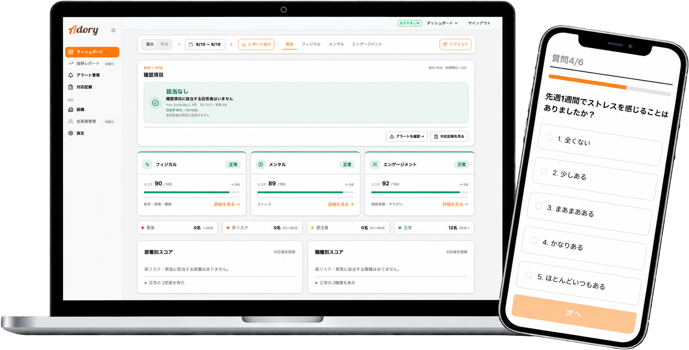
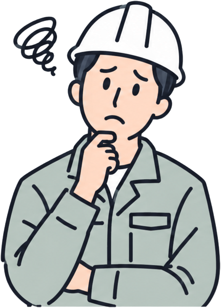
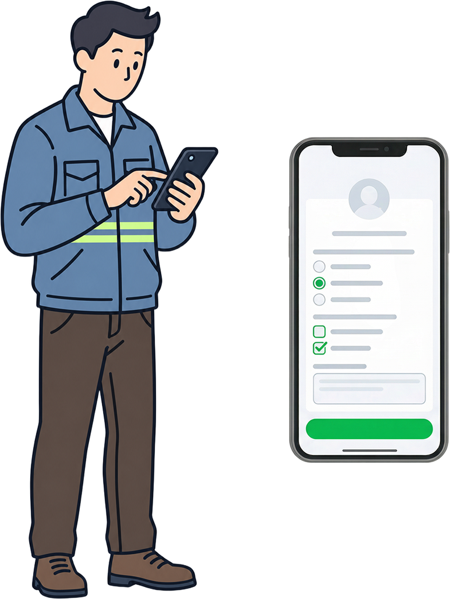
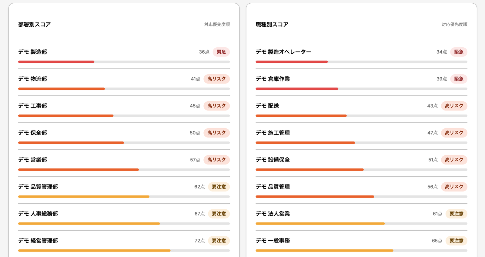

現場の「コンディション」を週1回データ化。労災・離職の予兆を早期検知し、稼働率・売上を守る
安全管理SaaS『Adory（アドリー）』
建設・物流・運送・介護・警備・小売など、身体が資本の現場へ。
現場任せ・属人化しがちな体調管理（コンディション）を、LINEで週1回2分で本社にデータ集約。
稼働率と売上が悪化する前に手を打てる仕組みを提供します。
アプリのダウンロード・PC・パスワードは不要です。

こんな課題、ありませんか？
現場の「見えない痛み」が、企業の最大リスクになっています

- 部下が「大丈夫です」と言うが、明らかに顔色が悪い
- ある日突然「腰が限界で辞めます」と言われた
- 何を基準に危ない人を判断すればいいか分からない
- 労災が起きてから「なぜ気付かなかったのか」と問われた
- 年1回の健診をしているが、翌月に離職した
- ストレスチェックはやっているが、現場のリスクが見えない
- 「きつそう」「身体を壊しそう」で応募が集まらない
- せっかく採用した人が半年以内に辞めていく
- 「従業員を大切にしない会社」という口コミが広がる
今の対策は「結果指標」
最も重要な期間が、管理の空白地帯になっています
現場では、「痛みや不調が蓄積→我慢→限界→突然の離職・労災」という構造が繰り返されています。
年1回の健診・ストレスチェックは「結果指標」であり、この空白を埋めることができません。
我慢・放置
ミス・集中力↓
休職・離職
採用難
ストレスチェック
Adory（アドリー）とは —— 一言でいうと
現場の「痛み」を週次でデータ化し、管理者が先手を打てる仕組みをつくるSaaSです。
現場に負担をかけない設計

アプリのダウンロード・PC・ログイン・パスワードは一切不要。普段使いのLINEで、週1回・6問・約2分で完結します。IT操作に不慣れな方でも回答できます。
ダッシュボードで即確認

総合・フィジカル・メンタル・エンゲージメントの4画面。部署別・職種別のスコアと高リスク者数を表示し、どこに介入すべきかが一目で分かります。
対応の記録が残る

声かけ・産業医相談などの対応履歴をアラートと紐づけて記録。閲覧のみで編集・削除ができないため、対応した経緯を説明できる状態を維持できます。
「痛み」は3種類あるという考え方
フィジカルを軸にしながら、心と社会的な側面も補助指標として測定し、多角的に状態を把握します。現場では、職場の孤立から帰属意識の低下、慢性痛の悪化へつながる経路も想定しています。
① 身体の痛み
疼痛・疲労・睡眠。Adoryの主軸となる領域です。
② 心の痛み
ストレス。心理的負荷の変化を補助指標として把握します。
3つの痛みは互いに影響し合います。Adoryは重なり合う領域まで含めて、このような考え方で痛みをとらえています。
※設問・スコアロジック・アラートロジックは理学療法士監修
選び抜かれた6問すべて理学療法士監修
設問設計だけでなく、スコアロジックとアラートロジックまで理学療法士の監修を受けています。この6問で、フィジカル・メンタル・エンゲージメントの3領域を毎週把握します。

疲労度
慢性的な疲労の蓄積を可視化
痛み
負担部位と深刻度を同時に把握
睡眠時間
回復不足の兆候を検知
ストレス
心理的負荷の変化を把握
帰属意識
組織への帰属感を把握
やりがい
エンゲージメントの変化を検知
配信はデフォルトで毎週月曜7時。企業ごとに頻度（週次・隔週・月次）、曜日、時間を設定できます。変化を捉える観点から週次を推奨しています。
今週対応が必要な人数と部署が、最初に出ます
現場はダッシュボードをじっくり見る時間がありません。ファーストビューで見落としが出ないよう、対応が必要な件数を先に表示し、詳細はタップで開く設計にしています。

高リスク者管理
閾値以上・スコア低下など条件に合致した方を自動でアラート表示。管理者が確認と対応を検討できます。
痛み部位ヒートマップ
腰・首肩・手腕・膝・足首などの部位別分布。負担が集中している業務を特定できます。
時系列スコア推移
直近12週間の推移を部署・拠点単位で追跡。悪化と改善のトレンドが分かります。
疲労と睡眠の相関
散布図と相関係数を自動算出。生活習慣起因かどうかの当たりをつけられます。
部署別・職種別比較
緊急・高リスク・要注意・正常の4段階で、配置転換や業務軽減の判断材料になります。
未回答者管理・権限設定
未回答者を即確認。経営・現場には全体スコア、管理者には個別スコアと権限を分けられます。
置き換えではなく、補完するプロダクトです
健診・ストレスチェック・毎日の点呼をやめる必要はありません。Adoryはそれらが担えていない時間軸を埋めます。
| Adory | エンゲージメント サーベイ | 健診・ ストレスチェック | 毎日の点呼 | |
|---|---|---|---|---|
| 対象 | 現場職に特化建設・運送・介護・製造など | オフィスワーカー中心 | 全従業員（法定義務） | 現場全員 |
| 頻度 | 週1回隔週・月次も設定可 | 月次 | 年1回 | 毎日 |
| 時間軸 | 先行指標 | 結果指標 | 結果指標 | その日の可否 |
| 計測内容 | フィジカル特化＋メンタル・エンゲージメント | メンタル・組織 | 身体の痛みは対象外が多い | 感覚・定性のみ |
| 入力手段 | LINE（アプリ不要） | メール → Web | 紙・Web | 口頭・紙 |
| 記録 | 全データが証跡として保存 | 回答データのみ | 結果票 | 残らないケースが多い |
点呼は「今日、動けるか」を確認するもの。Adoryは「数週間から数か月後の変化を今つかむ」もので、時間軸が根本的に異なります。
現場が分散し、人が売上に直結する業界ほど効きます
労働集約型のビジネスでは、売上は稼働数で決まります。1人の欠勤・休職が、そのまま売上のトップラインに影響します。
建設
墜落・転落が死亡災害の33%。2024年問題で工期と人件費の圧迫が続き、人手不足倒産も最多水準です。ゼネコン・サブコン・工務店・土木で身体負荷の性質が異なります。
運送・物流
車両にドライバーが乗って初めて売上が立つ構造。運輸交通業の腰痛発生率は12.9%。タクシーは健康起因事故の約33%が交通事故に至っています。
介護
移乗・入浴・排泄の直接介助で腰痛リスクが高く、労働災害発生率は全産業平均の約1.6倍。夜勤者の急な欠勤が即人員不足に直結します。
製造
労働災害死傷者数は全業種トップの26,676人（令和6年）。反復動作・重量物の取り扱い・長時間の同一姿勢が累積負荷になります。
出典：厚生労働省「令和6年 労働災害発生状況」「国民生活基礎調査」、帝国データバンク、総務省「令和4年就業構造基本調査」ほかを基に当社作成。
見えない痛みは、そのまま損失になります
従業員100名規模で年間約1,500万円超の損失という試算があります。欠勤の穴埋め、採用費、労災の補償、生産性の低下が積み上がった結果です。
さらに積み上がる、見えないコスト
- 欠勤・休職による穴埋めコスト（残業代・派遣費）
- 離職にともなう採用費・教育費（1名あたり100〜200万円）
- 労災認定時の補償・賠償・保険料率の上昇
- ミスの増加による生産性の低下
- 「きつい会社」という評判による採用難
採用コスト1名分の約4分の1です。苦労して採用した若手やベテラン1名が辞めずに済めば、それだけで費用を上回る計算になります。
料金プランを見る →出典：昭和医科大学プレスリリース「日本人労働者3人に1人が仕事に支障をきたす健康問題を抱えながら出勤」（2025年6月26日）を基に当社作成。
設問・スコア・アラートのすべてを、理学療法士が監修

整形外科で運動器疾患・スポーツ障害・高齢者のリハビリテーションに累計4万人以上従事。腰痛・腰椎分離症・体幹をテーマに、国内学術大会での発表と論文執筆（筆頭2本、共著多数）を重ねてきました。現在はフリーランスの理学療法士・看護師として、企業・自治体・学校の健診業務や、働く人の障害予防・疾病予防にも関わっています。
以前から代表の本田さんの背景や信念に共感していました。この度監修のお話をいただき、私の医療従事者としての知識や経験が、働くみなさんの心身の健康やお仕事の継続にお役に立てればと思い、喜んで引き受けさせていただきました。
料金プラン
Adory SaaS 基本プラン
- 週1回・6問で痛みと疲労の変化を可視化
- 状態変化を検知して管理者に通知
- 部署別・職種別ダッシュボード
- 対応記録の自動蓄積
- 配信の頻度・曜日・時間をカスタマイズ
お問い合わせから、最短1週間で配信スタート
IT知識は不要です。設定は弊社がサポートします。
お問い合わせ
Webフォームまたは担当者へご連絡
ヒアリング
課題・現場規模・目的を確認
設定
LINE連携・従業員情報の登録（サポートあり）
オンボーディング
管理者・従業員への操作説明（30分）
運用スタート
週次サーベイ配信・ダッシュボード利用開始
まずはPoC（3ヶ月）から始めていただけます
初期費用0円・解約期間は要相談。効果を見てから導入をご判断いただけます。
よくある質問
「壊れる前に気付ける仕組み」を、
あなたの会社から始めませんか。
まずは3ヶ月のPoCから。初期費用0円、最短1週間で配信を開始できます。
資料のダウンロードだけでも構いません。